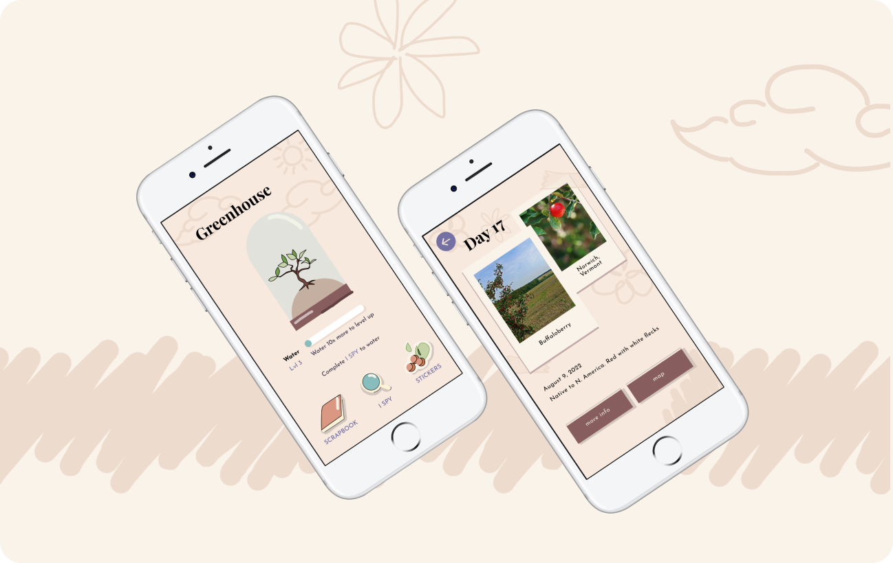
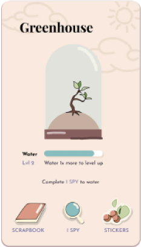
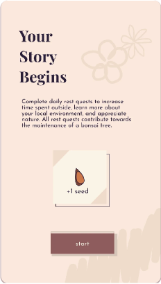

RestQuest
Promoting connection with nature through the gamification of experiencing one's local environment.

Overview
We designed Rest Quest, a mobile app that utilizes gamification and nostalgia to encourage people to go outside and learn about their local environment.
This was a final project for our UI/UX class at Dartmouth College. The process entailed 11 user interviews and analysis before prototyping features based on user insights. After prioritizing simplicity, the grayscales were streamlined to minimize the number of clicks necessary. Multiple iterations of UI were developed to push for a nostalgic, hand-drawn aesthetic based on user feedback.


Background
Spending time in nature has been found to help with mental health problems such as anxiety and depression. Many college students spend little time outdoors, even knowing the proven mental health benefits.
Even though they would like to get outside more often, college students often feel too busy with work to spend time outdoors. Spending time outdoors often feels like another chore to add to a list of tasks, and is seen as low priority compared to academics.
Solution
Rest Quest motivates the experience of going out into nature to promote frequent interactions with the outdoors and improve mental health.

Reframe
The app uses I Spy to encourage students to reframe spending time outdoors as a quick activity that can be completed without sacrificing time on work. The game encourages users to look closely at their natural surroundings and think beyond schoolwork.

Daily Task
The I Spy game must be completed daily in order for users to water and grow their digital bonsai tree, encouraging users to return to the app and interact with nature on a frequent basis.

Retention
Completing the I Spy game gives the user information about natural species in their area, which can then be logged in a scrapbook. A map feature showing where the user has identified items encourages retention about their surroundings.
Additional Features
- Quick, daily 10–15 minute I Spy game
- Maps to track travels and species found
- Unlock stickers to track progress
- Ability to log information in scrapbook for memory and learning
- Maintain a bonsai tree for retention
- Discover species in local environment


User Research
Insight 1: Time Barrier
The main barrier preventing students from spending more time in nature is a lack of time.
"If I'm limited on time, nature is one of the first things that gets pushed out."
"Sometimes I forget about it and push it out of the way in favor of other things."
"Nature is not something I'd prioritize over schoolwork and grades."
Students prioritize studying and academics over most other activities. Although most of them admit that spending time in nature makes them feel better, it is still not as important as getting their schoolwork done and being prepared for their classes.
Insight 2: Learning Resources Gap
While many students wish they knew more about the nature around them, they don't know where to start learning.
"It's hard to find on your own what's available in nature without resources like the DOC."
"I would like to learn more, but there's so much information out there — I'm always open to learning more."
"Understanding the environmental systems around me would be pretty fun."
Students recognized the importance of understanding the natural environment around where they lived, but didn't know where to begin. As busy college students, they felt they didn't have the time to invest in looking for ways to get more involved and learn about nature.
Insight 3: Meaningful Connection
For many students, connecting with nature means taking in their surroundings and appreciating the world around them.
"Connecting with nature is whenever I actually look up at what's around me and appreciate it instead of just using what's there."
"Looking at the stuff you won't really notice or take for granted."
"Sometimes if I'm thinking or worrying too much, nature helps me realize how some worries don't matter compared to how big the world is."
To most students we interviewed, simply being physically outdoors was not enough. Truly connecting with nature meant taking the time to experience the natural world with all their senses. Students who were most involved with nature had formed a strong connection based on tradition and childhood memories — nostalgia and past experiences seemed to be a strong factor in increasing one's involvement with the natural world.
How Might We
We explored these insights in the form of two How Might We questions:
- How might we encourage college students to prioritize going outside despite their busy schedules?
- How might we incentivize learning about the local environment?
After gathering user interviews, creating empathy maps, and synthesizing insights, we created our user persona: a busy college student who would like to go outside more often, but believes they have to give up time outdoors in order to prioritize studying.

Ideation
Keeping in mind our user's needs, and with the goal of creating a digital application to help them connect with nature, I generated some crazy 8's.
We decided to center our app around the game of I Spy — for the quickness with which it can be played, and its role as a game many people played in their childhood, tapping into a sense of nostalgia that could be used to encourage positive experiences with nature.


Grayscales
First, we created grayscale mockups of the gameplay for our I Spy feature. The gameplay brought the user to a camera and encouraged them to take a picture of their surroundings. The app would then identify natural species in the photo and simulate an I Spy game based on its features. The user would take an up-close picture of the object, the program would verify their answer, and then provide information and a reward.
User Visits Home Page
I designed a rough home page with an icon for each main feature we wanted to create. We brainstormed having a plant as a visual backdrop but eventually decided to add it as its own feature. In later iterations, we incorporated it as a progress tracker that incentivized return to the app.

User Opens Daily I Spy Feature
We designed a rough screen for opening the I Spy feature. The main feature was accessible directly from the home screen, keeping the number of clicks to a minimum and ensuring users could complete the game quickly.

User Identifies Local Species
The app would identify a local species and lead the user in I Spy. This would help the user learn more about their local environment by encouraging close observation of natural surroundings.

User Saves Daily Discovery
To encourage actual memorization, we designed a "field notes" feature where users could save the species they learned along with relevant information. This interface went through multiple changes and eventually we decided on one that looked like a journal page.

Location of Discovery is Saved
We designed a map feature to show off all of the places and species a user has recorded. This would be accessible through the notes section and was removed from the home screen to simplify the user flow. It serves as a photo album and is another way for users to remember information.

User Earns Badges
The badge feature allowed users to earn badges with more discoveries. This motivated users to return to the app and, consequently, spend more time outdoors.

Iterations & User Feedback
In order to incentivize users to use the app more frequently, we decided to make the objective of the game to complete an I Spy every day in order to water and fertilize a personal bonsai tree. Completing the I Spy game would earn the user a sticker and water the tree and keep it alive, while customizing their scrapbook with the stickers provided would fertilize the tree and grow it.
However, after 6 user tests, we found that many users found the fertilization feature confusing. Having two potential ways to level up simply didn't make sense. Therefore, we removed this element.


Another feature that was removed was the customization feature. Rather than encouraging users to return to the notes of their found species, the feature confused them. Too many features were against our purpose of less screen time to spend more time outdoors.
For the UI styles we tried, we started off trying for a hand-drawn, kitschy aesthetic to further invoke nostalgia. I used a paper texture and lines to resemble graph paper. We were inspired by bullet journal spreads found online. However, users thought it was ugly. It failed accessibility standards and had too many distracting elements.


Final UI & Style Guide
Our final UI is much more minimalist to accommodate accessibility standards. We kept the hand-drawn aesthetic, but used toned-down muted colors in order to decrease contrast. The sketches are background elements and have a low hierarchy.
We stuck to a warm, pastel color scheme in order to create a friendly and inviting atmosphere. In order to further the sense of nostalgia, polaroid frames were used to border many images.


In Conclusion
We created a mobile app that reframes a user's relationship with nature in order to promote connection. The I Spy feature utilizes gamification and nostalgia to encourage people to go outside. The scrapbook and sticker features log information and facilitate learning about one's local environment. The bonsai feature promotes return to the app and establishing a daily habit.
Moving Forward
The goal of Rest Quest was to encourage busy students to spend more time outdoors by reframing the action of going outdoors as a fun, quick way to take a break from academics and gamifying the activity to promote more frequent interactions with the outdoors.
With this project, we learned to quickly research, ideate, and prototype under a strict deadline of 3 weeks. Our ability to rapidly ideate and refine our ideas to fit the needs of our user helped us create a holistic final product.
Moving forward, Rest Quest would hopefully be expanded to accommodate the needs of people who live in cities, or places where they wouldn't have daily access to nature. Additionally, although we removed the customization feature to simplify the UX, we could rework customization or brainstorm other ideas to further encourage memory and retention of the natural species users find. Lastly, we would simplify UX even further to decrease the number of clicks and encourage users to spend more time looking into their natural environment.